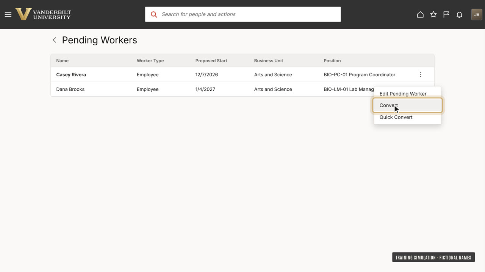
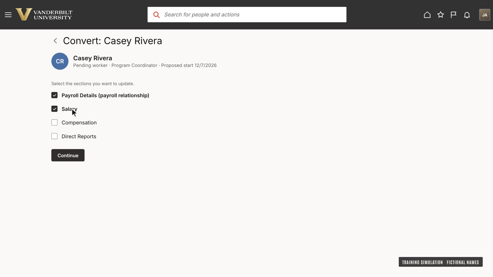
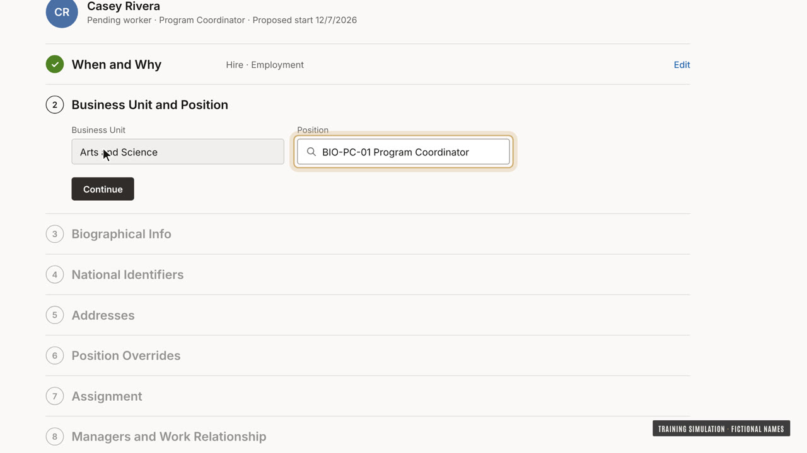
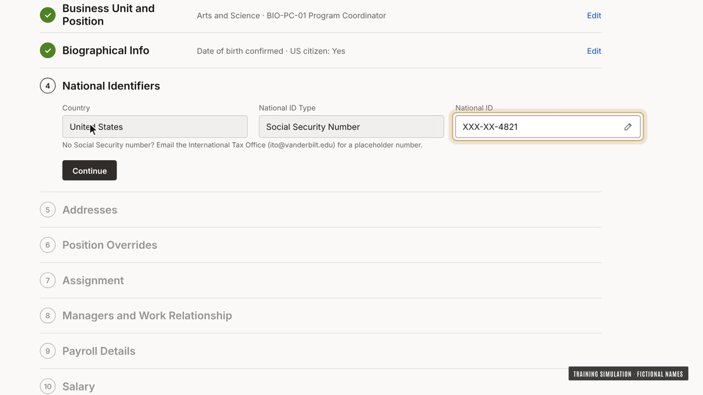
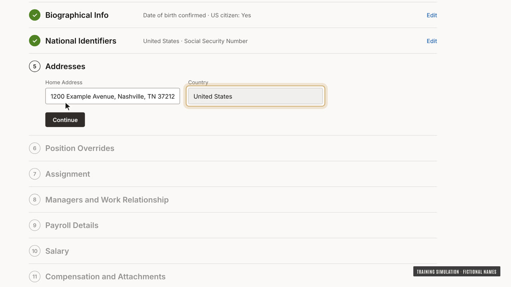
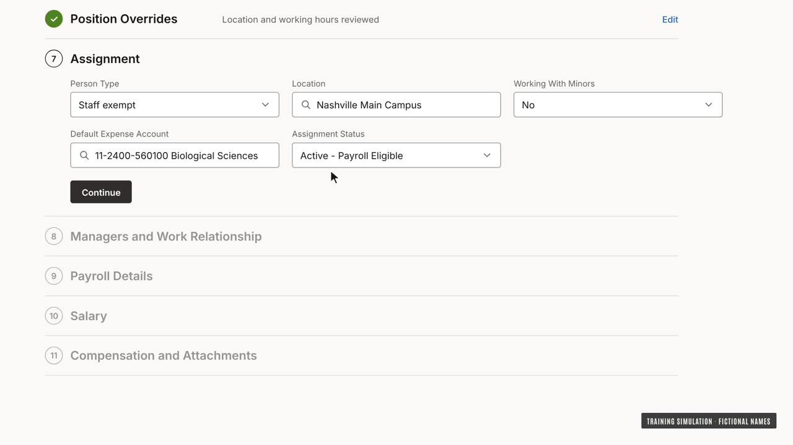
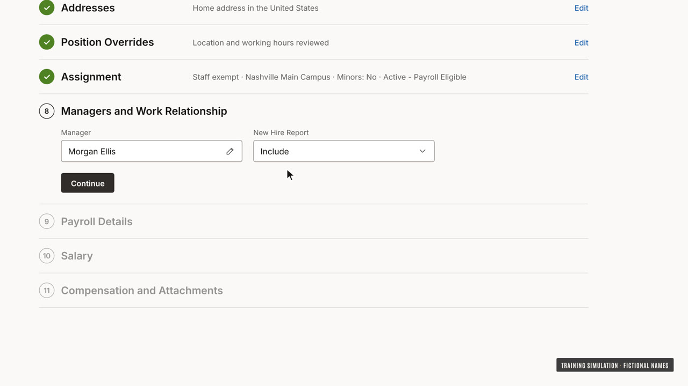

V.02 draftReviewed by a Vanderbilt SME in November 2026, and the review's changes are in. Confirm the open items before release.
Screen checkConfirm in Vanderbilt's Oracle or UKG during a recorded demo: the Pending Workers path and section names; the hire reasons; the assignment status labels; the new hire report field; that a regular HCM (not a super-user) sees Our Workforce and this quick action.
1 · Intro
When to use it.
Watch first, then read the details below. Narrated, with the steps captioned on screen. A training simulation with fictional names, built from standard Oracle screens; Vanderbilt's screens may differ slightly.
When a candidate's background check clears, the pre-employment background check (PEBC) team emails you that they're clear to start, and the person appears as a pending worker. Converting them is the hire transaction.
What you enter here becomes their assignment, pay, and manager, so this is the step that decides whether the first paycheck is right.
Use this whenYou got the clear to start email and the new hire is in your pending workers list.
2 · Walk through
Step by step.
Follow along in Oracle HCM. Check off each step as you go.
Before you submit
The same four checks on every pay-impacting transaction. Draft: the owner for this area confirms anything marked To confirm.
Attach
Offer letter, for your business unit approver Attach
To confirmThe exact payroll elements to confirm at hire are still being documented with the payroll team.
Check
Read every field back against the source document: person, effective date, position, hours, pay, and costing.
Action Hire, reason Employment. The other reasons are for students on a stipend and for affiliates.
Business unit and position match the offer.
Assignment status is Active payroll eligible for anyone who is paid.
Payroll details and salary show what the person will actually be paid.
Location is where the person will actually work.
Cutoff
No pay starts until the hire is approved. Check the payroll calendar for the cutoff that applies to the person's pay cycle. Pending approvals do not pay. A change still waiting in approvals at the cutoff misses that payroll.
Who does what
Who starts it: You, after the clear to start email.
Who approves: Your business unit approver.
What happens next: Payroll pays what the record says. A missing element or a wrong conversion means a wrong first paycheck.
Watch-outs
Never Quick Convert or Edit Pending Worker. Use Convert.
Active no payroll means no pay at all. Use it only for unpaid affiliates.
Not sure where a hire or transfer stands? Ask central recruiting before you create a direct hire.
The citizenship field doesn't look like it needs data. Click the pencil every time.
Official documentation
Vendor documentation describes the standard process. Vanderbilt's setup, codes, and rules in this course take priority.
Use when: You got the clear to start email and the new hire is in your pending workers list. · System: Oracle HCM
Open Pending Workers.
Click the three dots next to the person, then Convert.
Select the sections you'll update.
When and why: action Hire, reason Employment.
Service free appointment: only for students receiving a stipend.
Non-employment: affiliates.
Check the business unit and position.
Biographical info: confirm date of birth and citizenship.
National ID: Social Security number or a placeholder.
Home address must be in the United States.
Position overrides: review and continue.
Assignment: person type, location, minors, expense account, status.
Location: override to where they'll actually work if remote (for example, Florida).
Working with minors: required; Yes triggers an additional check.
Default expense account: your department's usual account.
Assignment status: Active payroll eligible for anyone paid. Active no payroll only for affiliates; they won't appear in payroll even with a salary.
Managers and work relationship.
Payroll details.
Salary: enter what they'll actually be paid.
Review compensation, attach the offer letter, and click Submit.
Before you submit
Attach: Offer letter, for your business unit approver (attach). To confirm: The exact payroll elements to confirm at hire are still being documented with the payroll team.
Check: Action Hire, reason Employment. The other reasons are for students on a stipend and for affiliates. Business unit and position match the offer. Assignment status is Active payroll eligible for anyone who is paid. Payroll details and salary show what the person will actually be paid. Location is where the person will actually work.
Cutoff: Approved before the cutoff for the person's pay cycle. No approval, no pay.
Watch-outs
Never Quick Convert or Edit Pending Worker. Use Convert.
Active no payroll means no pay at all. Use it only for unpaid affiliates.
Not sure where a hire or transfer stands? Ask central recruiting before you create a direct hire.
The citizenship field doesn't look like it needs data. Click the pencil every time.
V.02 draft, updated Nov 18, 2026. Owner: HRIS. Sources: HCM training session 1, positions and pending workers, Sep 8, 2026.Questions: pcb@vanderbilt.edu
HCM Academy detailed job aid · Hiring
Converting a pending worker, step by step
Step by step with screenshots. Screens from the HCM Academy training simulation of Oracle HCM. Names are fictional; check labels against Vanderbilt's Oracle.
01Open Pending Workers.
Our Workforce > Pending Workers. Everyone in your business unit who is ready to convert is listed.
02Click the three dots next to the person, then Convert.
Don't use Quick Convert or Edit Pending Worker. Make every change inside Convert.

03Select the sections you'll update.
Check Payroll details (Vanderbilt calls it payroll relationship) and Salary. Add Compensation if there's a bonus or other payment, and Direct reports if they'll manage people. Click Continue.

04When and why: action Hire, reason Employment.
Hire employment is almost always right.
05Check the business unit and position.
If the position changed after the offer (the recruiter has already sent a new offer letter), select the correct position here. Make any pre-hire corrections at this step.

06Biographical info: confirm date of birth and citizenship.
Date of birth comes from the background check. US citizen or permanent resident looks complete until you click the pencil: always click it and pick Yes or No. PEBC records the answer on the application.
07National ID: Social Security number or a placeholder.
No SSN? Email the International Tax Office (ito@vanderbilt.edu) for a placeholder number, then click the pencil, choose placeholder number, and enter it.

08Home address must be in the United States.
Anyone being paid needs a US address. If you see another country, click Cancel and contact central HR to correct it.

09Position overrides: review and continue.
Shaded fields such as location and working hours can be changed. Check yourself as manager here only if you are their manager.
10Assignment: person type, location, minors, expense account, status.
Set Person type to match the assignment category (for example, Professional exempt = Staff exempt).

11Managers and work relationship.
Click the pencil to set the manager. On work relationship info, choose Include in the new hire report for paid hires, Exclude for affiliates and contractors.

12Payroll details.
Monthly (regular) pays an annual salary. Biweekly is hourly: set overtime to biweekly and Time card required to Yes.
13Salary: enter what they'll actually be paid.
For a 0.75 FTE (30 hours) at $58,000, enter $58,000; use the calculator to confirm. Oracle shows the full-time equivalent for reference.
14Review compensation, attach the offer letter, and click Submit.
Check any payment such as a relocation or sign-on bonus. Attach the offer letter for your business unit approver. Approval: business unit approver, then PEBC, then central HR.
V.02 draft, updated Nov 18, 2026.Questions: pcb@vanderbilt.edu
Course record
Owner and changes.
Owner
HRISRecruiting and hiring, assignment changes, offboarding, leave, records and reporting, and the HCM foundations.
Version
V.02 draftUpdated Nov 18, 2026
Review
Reviewed by a Vanderbilt SME in November 2026, and the review's changes are in. Confirm the open items before release.
What changed
Nov 18, 2026From the SME review: the citizenship field must be opened with the pencil, or it's easy to miss.
Nov 17, 2026Added a narrated video and a detailed job aid with a picture for each step.
Nov 13, 2026Owner is now HRIS. It was shown as Recruiting and Hiring.
Nov 12, 2026Added Before you submit: what to attach, what to check, the cutoff, and who does what. Owner shown: Recruiting and Hiring.